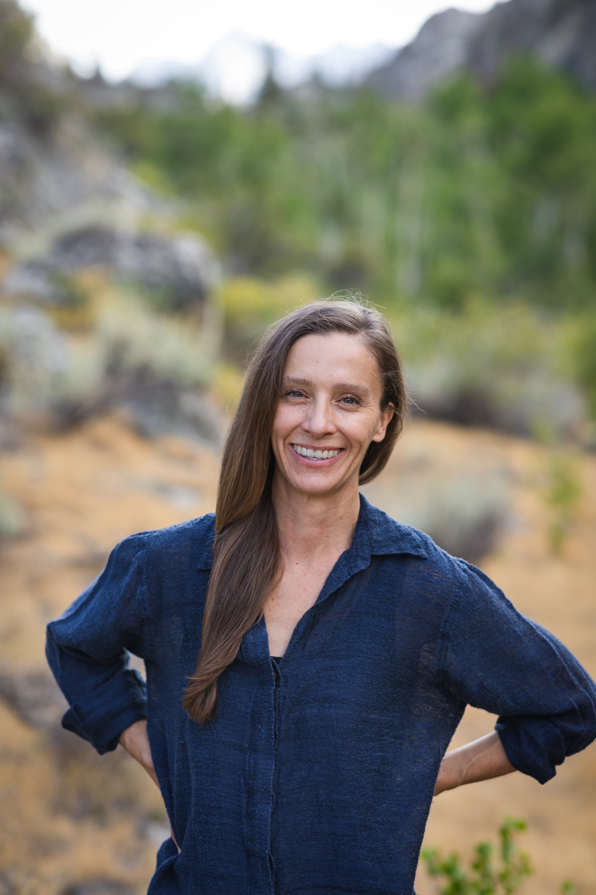

Lauren O'Connor, MS CCC-SLP is the founder of Triple Point Speech Therapy.

Triple Point Speech Therapy's goal is to bring greater awareness of myofunctional disorders to local and regional communities, empower clients and families, and improve their quality of life.
I am a board-certified Speech-Language Pathologist with 14 years of experience working with an extensive range and severity of communication disorders — in in-home, telehealth, public education, and private practice settings, with infants, toddlers, preschoolers through teens, and adults.
"My personal history with sleep apnea, TMJ dysfunction, and bruxism — combined with clinical treatment and training from leaders in the field — has given me a nuanced understanding of myofunctional disorders. This confluence of professional and personal experience led me to specialize in orofacial myofunctional disorders and early intervention."
My goal is to guide clients with efficient, effective, and caring treatment — to bring them to a place of ease and balance with breathing, eating, and speaking.
Ongoing education, client care, and professional collaboration are the foundations of this practice.
Whether you are an adult navigating sleep-disordered breathing, a parent concerned about your child's development, or a clinician seeking a collaborative partner — you are in the right place.
Orofacial myofunctional therapy works best as part of an integrated care team. Lauren coordinates regularly with the following specialists.
Coordinating care around oral habits, jaw development, and myofunctional support post-treatment.
Supporting stable outcomes and reducing orthodontic relapse through myofunctional co-treatment.
Addressing nasal obstruction and airway issues that underlie chronic mouth breathing.
Partnering on sleep-disordered breathing, including pediatric and adult sleep apnea management.
Supporting infants with tongue tie, poor latch, and feeding difficulties from birth.
Addressing postural, structural, and musculoskeletal factors that contribute to orofacial dysfunction and airway concerns.
Lauren holds training, membership, and ambassador status with the following professional organizations in orofacial myology, sleep medicine, and speech-language pathology.
A free 30-minute consultation is the right place to start. Lauren will help you determine whether a myofunctional evaluation makes sense for your situation.